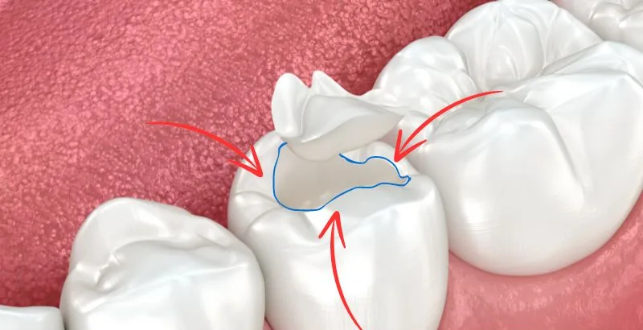

Wenn Karies behandelt werden muss, stehen Patienten oft vor mehreren Möglichkeiten, ihre Zähne wiederherzustellen. Zu den häufigsten Lösungen gehören Inlays, Onlays und Kronen. Die Entscheidung zwischen Inlays und Onlays vs. Kronen kann manchmal überfordernd wirken, besonders wenn Patienten nicht sicher sind, welche Option am besten zu ihren Bedürfnissen passt. Jede dieser Behandlungen bietet je nach Ausmaß des Zahnschadens und gewünschtem Ergebnis besondere Vorteile.
Dank moderner Fortschritte in der Zahnmedizin werden Inlays und Onlays zunehmend bevorzugt, weil sie im Vergleich zu Kronen, die den ganzen Zahn bedecken, mehr natürliche Zahnsubstanz erhalten. Während Kronen eine vollständige Schutzkappe bilden, verfolgen Inlays und Onlays einen schonenderen Ansatz, indem sie gezielt die Bereiche des Zahns versorgen, die eine Wiederherstellung benötigen. Beide Methoden sind belastbar und langlebig, doch den Unterschied zwischen Inlays und Onlays vs. Kronen zu verstehen, ist entscheidend für eine fundierte Entscheidung über Ihre Zahngesundheit.
In diesem Artikel erläutern wir die Unterschiede zwischen diesen Behandlungen und begleiten Sie bei der Wahl der besten Option für Ihre Situation. Ob Sie einen Zahn mit geringem Schaden schützen möchten oder eine umfangreichere Versorgung benötigen – wenn Sie die Stärken von Inlays und Onlays vs. Kronen kennen, können Sie Ihre Behandlungswahl mit Zuversicht treffen.
Was ist der Unterschied zwischen Inlays, Onlays und Kronen?
Für die Wiederherstellung beschädigter Zähne bietet die moderne Zahnmedizin eine Reihe wirksamer Lösungen. Dazu gehören Inlays und Onlays vs. Kronen – häufig eingesetzte Behandlungen, die auf unterschiedliche Ausmaße von Karies oder strukturellen Schäden ausgelegt sind. Die Optionen unterscheiden sich darin, wie viel vom Zahn bedeckt und erhalten wird und wie umfassend sie schützen. Die Unterschiede zu verstehen, ist wichtig, um fundiert entscheiden zu können, was für Ihre Situation richtig ist. In den folgenden Abschnitten zeigen wir, wie sich Inlays, Onlays und Kronen in ihrem Ansatz zur Zahnversorgung unterscheiden.
Inlay

Ein Inlay ist eine Form der Zahnversorgung, mit der Schäden oder Karies innerhalb der Höcker eines Zahns behoben werden. Es ist eine individuell im Dentallabor angefertigte Füllung und wird in der Regel bei Karies oder Schäden eingesetzt, die für eine normale Füllung zu groß, aber nicht so schwer sind, dass eine Krone nötig wäre. Inlays stellen Gesundheit und Funktion des Zahns wieder her, indem sie passgenau in den beschädigten Bereich eingesetzt werden, und bieten eine belastbare und ästhetische Lösung für mittelgroße bis große Defekte oder strukturelle Probleme.
Wie wird eine Inlay-Behandlung durchgeführt?
Bevor ein Inlay eingesetzt wird, muss der betroffene Zahnbereich so behandelt werden, dass er sauber und kariesfrei ist. Der Zahnarzt entfernt zunächst das kariöse oder beschädigte Gewebe und reinigt den Bereich gründlich. Ist der Zahn vorbereitet, nimmt der Zahnarzt genaue Maße oder einen Abdruck der Kavität. Diese Daten werden an ein Dentallabor geschickt, wo das Inlay exakt passend zu den Maßen des vorbereiteten Zahns individuell angefertigt wird. Das Inlay besteht in der Regel aus Komposit, Keramik oder anderen belastbaren Materialien, und Form und Farbe werden an das natürliche Aussehen der Zähne des Patienten angepasst.
Sobald das Inlay fertig ist, setzt der Zahnarzt es sorgfältig in die vorbereitete Kavität ein und achtet auf eine perfekte Passung. Der Eingriff erfolgt in der Regel unter örtlicher Betäubung, damit der Patient keine Beschwerden hat. Inlays werden herkömmlichen Amalgamfüllungen (umgangssprachlich Silberfüllungen) oft vorgezogen, weil sie ästhetische Vorteile bieten und mehr natürliche Zahnsubstanz erhalten. Da Inlays in der Kaufläche des Zahns sitzen, ähneln sie optisch stark einem natürlichen Zahn und helfen, den Zahn zu stärken und widerstandsfähiger zu machen. Es empfiehlt sich immer, einen Zahnarzt zu konsultieren, um die beste Behandlung für Ihre individuellen Bedürfnisse festzulegen.
Onlay

Ein Onlay ist eine Form der Zahnversorgung, mit der Struktur und Funktion eines beschädigten oder kariösen Zahns wiederhergestellt werden. Ähnlich wie eine Füllung wird ein Onlay auf oder in den Zahn gesetzt, bedeckt aber eine größere Fläche, einschließlich eines oder mehrerer Zahnhöcker. Onlays sollen den betroffenen Teil des Zahns neu formen und schützen und bieten eine belastbare Lösung, um die natürliche Unversehrtheit des Zahns zu erhalten und zugleich seine Funktion zu verbessern. Diese Technik wird häufig eingesetzt, wenn der Schaden für eine normale Füllung zu groß ist, aber keine vollständige Krone erfordert.
Wie wird eine Onlay-Behandlung durchgeführt?
Um ein Onlay einzusetzen, muss der beschädigte oder kariöse Zahn zunächst richtig vorbereitet werden. Der Zahnarzt entfernt das kariöse Gewebe und reinigt den betroffenen Bereich gründlich. Anschließend werden genaue Maße oder ein Abdruck des Bereichs genommen. Diese Daten werden an ein Dentallabor geschickt, wo das Onlay mit großer Sorgfalt individuell angefertigt wird, in der Regel aus Komposit, Keramik oder ähnlichen Materialien. Das Onlay wird so gefertigt, dass es perfekt passt und der natürlichen Form und Farbe der Zähne des Patienten entspricht.
Sobald das Onlay fertig ist, setzt der Zahnarzt es sorgfältig auf den vorbereiteten Zahn und achtet auf einen nahtlosen Sitz. Bei diesem Eingriff wird häufig eine örtliche Betäubung eingesetzt, damit der Patient keine Beschwerden hat. Onlays werden herkömmlichen Silberfüllungen oft vorgezogen, da sie ein ästhetischeres und natürlicheres Ergebnis liefern. Sie verbessern nicht nur das Aussehen des Zahns, sondern helfen auch, die verbleibende gesunde Zahnsubstanz zu erhalten und den Zahn zu stärken. Da Onlays die Kaufläche bedecken, ähneln sie stark natürlichen Zähnen und sind lange haltbar. Eine Beratung beim Zahnarzt ist unerlässlich, um die beste Behandlungsoption für Ihre Bedürfnisse festzulegen.
Krone

Eine Zahnkrone ist eine Schutzkappe, die einen beschädigten, kariösen oder geschwächten Zahn bedeckt und seine Form, Größe und Funktion wiederherstellt. Sie wird so gestaltet, dass sie den gesamten sichtbaren Teil des Zahns oberhalb des Zahnfleischrands umschließt, und bietet sowohl strukturellen Halt als auch eine ästhetische Verbesserung. Kronen werden häufig eingesetzt, wenn ein Zahn für eine Füllung zu stark beschädigt ist, etwa nach einer Wurzelbehandlung, oder um ein Zahnimplantat zu versorgen. Je nach Bedürfnissen und Wünschen des Patienten können sie aus verschiedenen Materialien gefertigt werden, darunter Metall, Kunststoff oder Porzellan.
Bei richtiger Pflege können Kronen zwischen fünf und 15 Jahren halten und bieten eine stabile und zuverlässige Lösung, um beschädigte Zähne zu schützen und ihr Aussehen zu verbessern. Kronen stellen nicht nur die Funktion wieder her, sondern helfen auch, das natürliche Aussehen Ihres Lächelns zu bewahren, indem sie sich nahtlos in die umgebenden Zähne einfügen.
Wie wird eine Kronenbehandlung durchgeführt?
Bevor eine Zahnkrone angefertigt wird, muss der kariöse oder beschädigte Zahn richtig vorbereitet werden. Der Zahnarzt entfernt sorgfältig alle geschwächten oder kariösen Bereiche und formt den verbleibenden Zahn. Anschließend wird ein Abdruck des Zahns genommen, um ein genaues Modell zu erstellen. Dieses Modell wird an ein Labor geschickt, wo die Krone mit großer Präzision gefertigt wird, damit sie perfekt auf den Zahn des Patienten passt und zu den umgebenden Zähnen passt. Kronen werden in der Regel aus Materialien wie Metall, Keramik oder Porzellan hergestellt, die jeweils nach Belastbarkeit und ästhetischen Eigenschaften ausgewählt werden.
Sobald die Krone fertig ist, setzt der Zahnarzt sie sorgfältig auf den Zahn des Patienten und achtet auf einen festen Sitz. Meist wird eine örtliche Betäubung verabreicht, damit der Patient während des Eingriffs keine Beschwerden hat. Kronen bedecken den gesamten Zahn und bieten sowohl ein natürliches Aussehen als auch funktionellen Halt. Neben der Stärkung des Zahns helfen Kronen, die verbleibende gesunde Zahnsubstanz zu erhalten. Mit ihrem natürlichen Aussehen und ihrer längeren Lebensdauer bieten Kronen im Vergleich zu herkömmlichen Füllungen eine belastbarere und wirksamere Lösung. Zahnärzte empfehlen Kronen je nach den Bedürfnissen des Patienten und dem Zustand des Zahns als langfristige Versorgung. Wenn Sie Zahnprobleme haben, ist es wichtig, Ihren Zahnarzt zu konsultieren, um die beste Behandlungsoption festzulegen.
Wann wird ein Inlay, Onlay oder eine Krone empfohlen?
 InlayOnlayKrone
InlayOnlayKroneWann werden Inlay und Onlay bevorzugt?
Inlays und Onlays werden – ebenso wie Kronen – in der Regel eingesetzt, um geschwächte, kariöse oder beschädigte Zähne wiederherzustellen und sie in einen funktionsfähigen, gesunden Zustand zurückzuversetzen. Diese Behandlungen eignen sich ideal für mittelgroße bis große Defekte, wobei so viel natürliche Zahnsubstanz wie möglich erhalten und nur die kariösen Bereiche entfernt werden; jede Option ist für ein anderes Ausmaß an Schäden geeignet. Onlays werden insbesondere häufig bei angebrochenen oder abgebrochenen Zähnen eingesetzt, um die beschädigten Teile zu ersetzen und die ursprüngliche Form des Zahns wiederherzustellen.
Inlays und Onlays sind auch dann eine wirksame Lösung, wenn bestehende Versorgungen oder Füllungen ersetzt oder verstärkt werden müssen. Sie bieten mehr Belastbarkeit und ein natürlicheres Aussehen, besonders wenn an Frontzähnen ästhetische Korrekturen nötig sind. Zudem können Inlays und Onlays nach einer Zahnentfernung als vorübergehende Lösung dienen und die Lücke füllen, bis ein dauerhafter Ersatz wie ein Implantat eingesetzt wird.
Wann wird eine Krone bevorzugt?
Kronen kommen dagegen zum Einsatz, wenn der Zahn zu stark beschädigt ist, als dass ein Inlay oder Onlay ausreichend Halt bieten könnte. Kronen bedecken den gesamten sichtbaren Teil des Zahns, schützen ihn vor weiteren Schäden und stellen zugleich Funktion und Aussehen wieder her. Sie werden häufig für wurzelbehandelte Zähne, bei erheblichen Frakturen oder beim Ersatz großer Füllungen empfohlen.
Letztlich empfehlen Zahnärzte Inlays, Onlays oder Kronen nach den individuellen Bedürfnissen jedes Patienten. Jede Option wird sorgfältig nach dem Ausmaß des Schadens und den persönlichen zahnmedizinischen Anforderungen des Patienten ausgewählt. Wenn Sie Zahnschmerzen, Karies oder Schäden haben, ist es wichtig, einen Zahnarzt zu konsultieren, um Ihre Behandlungsmöglichkeiten zu besprechen und einen Plan zu erstellen, der zu Ihrer Zahnstruktur und Ihren gesundheitlichen Bedürfnissen passt.
Inlay vs. Onlay vs. Krone: Vergleich
Vorteile von Inlays / Onlays:
Erhalt der Zahnsubstanz: Inlays und Onlays sind schonendere Behandlungen, die einen großen Teil der natürlichen Zahnsubstanz erhalten, da nur die beschädigten oder kariösen Bereiche versorgt werden.
Natürliches Aussehen: Sie werden an die natürliche Form und Farbe Ihrer Zähne angepasst und liefern ein nahtloses, ästhetisches Ergebnis, das wie ein natürlicher Teil des Zahns aussieht.
Haltbarkeit: Inlays und Onlays bestehen aus festen, langlebigen Materialien wie Keramik oder Komposit und sind daher belastbar und zugleich natürlich im Aussehen.
Minimale Präparation: Bei dieser Behandlung muss im Vergleich zu Kronen weniger Zahnsubstanz abgetragen werden, was die Stabilität und Unversehrtheit der gesunden Zahnsubstanz erhält.
Risiken von Inlays / Onlays:
Inlay- und Onlay-Versorgungen sind im Allgemeinen sichere und wirksame Behandlungsoptionen. Wie jeder medizinische Eingriff bergen sie jedoch gewisse Risiken. In seltenen Fällen können Patienten allergisch auf die verwendeten Materialien reagieren. Das ist wahrscheinlicher bei Menschen, die auf bestimmte Bestandteile zahnmedizinischer Materialien empfindlich reagieren. Ein weiteres mögliches Risiko sind vorübergehende Beschwerden oder Empfindlichkeit am behandelten Zahn. Diese können besonders beim Zähneputzen oder beim Verzehr heißer oder kalter Speisen auftreten, klingen aber in der Regel innerhalb weniger Tage bis Wochen ab.
Außerdem können sich Inlays und Onlays aus Komposit mit der Zeit verfärben, was zu einem sichtbaren Farbunterschied zum natürlichen Zahn führen kann. Diese ästhetische Veränderung kann das Gesamtbild der Versorgung beeinträchtigen und später eine Behandlung erfordern, um ein einheitliches Aussehen zu erhalten. Auch wenn diese Risiken selten sind, ist es wichtig, sie mit Ihrem Zahnarzt zu besprechen, um den besten Behandlungsansatz für Ihre Bedürfnisse zu finden.
Vorteile von Zahnkronen:
Vollständiger Zahnschutz: Kronen bedecken den Zahn vollständig und bieten robusten Schutz für stark beschädigte, kariöse oder wurzelbehandelte Zähne.
Wiederhergestellte Funktion: Kronen stellen die volle Kau- und Beißfunktion wieder her, sodass der Zahn wie ein natürlicher Zahn funktioniert.
Haltbarkeit: Kronen bestehen aus sehr belastbaren Materialien wie Porzellan, Metall oder Keramik und liefern bei richtiger Pflege langlebige Ergebnisse.
Strukturelle Stabilität: Nach Wurzelbehandlungen oder ausgedehnter Karies bieten Kronen den nötigen Halt, um ein weiteres Zerbrechen oder Beschädigen des Zahns zu verhindern.
Risiken von Zahnkronen:
Zahnkronen sind eine wirksame Behandlung, haben aber auch einige Nachteile. Ein wesentlicher Punkt ist, dass für die Krone natürlicher Zahnschmelz abgetragen wird, sodass der Zahn dauerhaft eine Überkronung braucht. Kronen müssen mit der Zeit eventuell auch wegen Karies, Rissen oder Lockerung ersetzt werden; bei richtiger Pflege halten sie in der Regel fünf bis zehn Jahre.
Ein weiteres Risiko ist eine mögliche Schädigung des Nervs, wenn zu viel Zahnsubstanz abgetragen wird, was manchmal eine weitere Behandlung wie eine Wurzelbehandlung erfordert. Außerdem können Patienten empfindlich auf Hitze oder Kälte reagieren, besonders wenn die Krone nicht perfekt sitzt; dies lässt sich jedoch durch Anpassungen beheben.
Was ist der Unterschied zwischen Inlay und Onlay?
Inlays und Onlays sind beide wirksame Methoden der Zahnversorgung, unterscheiden sich aber darin, wo sie eingesetzt werden. Ein Inlay füllt Defekte im zentralen Teil des Zahns, ohne bis an die Außenränder zu reichen. Es dient der Wiederherstellung der inneren Struktur des Zahns, ohne die Außenflächen zu betreffen.
Ein Onlay hingegen bedeckt eine größere Fläche und reicht bis an die Ränder oder die Kaufläche des Zahns, um Schäden oder Karies in diesen Bereichen zu beheben. Bei ausgedehnteren Schäden wird ein Onlay bevorzugt, um auch die äußeren Ränder des Zahns zu schützen.
Wie lange dauert eine Inlay-/Onlay-Behandlung?
Die Behandlung erfolgt in der Regel in zwei Sitzungen. In der ersten Sitzung wird das kariöse Gewebe entfernt, ein Abdruck genommen und anschließend eine provisorische Füllung gelegt. In der zweiten Sitzung wird das individuell angefertigte Inlay oder Onlay nach Prüfung der Passung poliert und am Zahn befestigt.